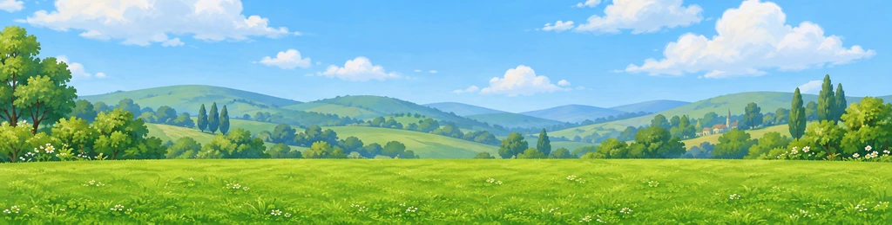

#geometry JSON) at any level, width or zoom via ?level= &width= &height= &zoom=. Grass, patches, path, fence, gate, hedge, clusters and river load from ./batch1/<filename>; missing files render as labelled dashed placeholders. Locked landmarks show as hazed silhouettes with a wooden Lv.N sign at their path entry.